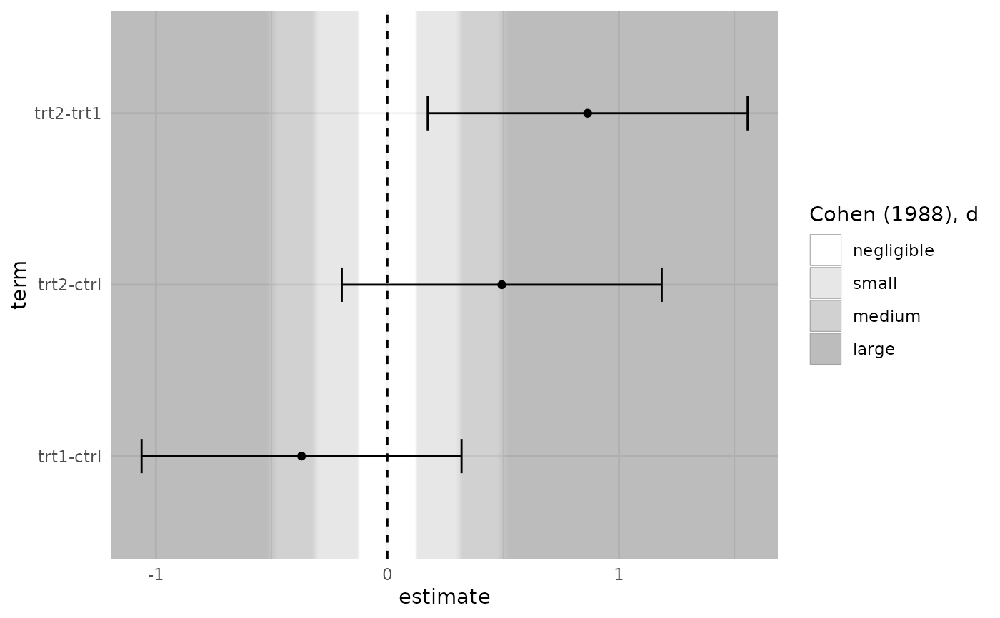
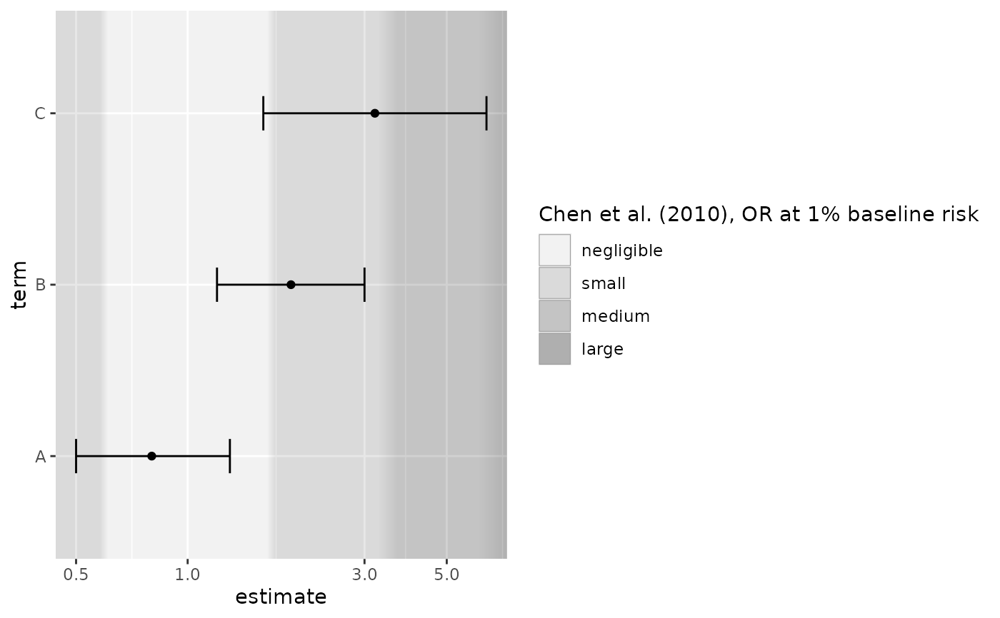

Draws background bands for effect-size magnitude zones ("negligible", "small", "medium", ...), symmetric around the null, behind estimates and confidence intervals. The layer draws a reference background only: it does not look at, classify or test any estimate.
Usage
geom_es_zones(
thresholds,
sd = NULL,
scale = "identity",
null = 0,
softness = 0.1,
palette = "grey",
alpha = 0.35,
orientation = "x",
expand = FALSE,
labels = FALSE,
label_size = 3,
label_colour = "grey20",
n_slices = 40,
title = NULL,
show.legend = NA,
...
)Arguments
- thresholds
An
es_thresholds()object, typically fromes_benchmarks(). Required.- sd
Standard deviation used to convert standardised thresholds to the raw scale of the axis (see
to_plot_scale()).- scale
"identity"for additive zones (null +/- cut),"log"for multiplicative zones aroundnull(ratios on a log axis).- null
Position of the null on the axis:
0for differences,1for ratios.- softness
Width of each soft transition as a fraction of the threshold it surrounds (on the log scale for multiplicative zones).
0gives hard edges.- palette
"grey"(default, print-safe),"blue"(single hue), or a vector of colours: one per zone (lightest first) or two to interpolate between.- alpha
Opacity of the fills.
- orientation
The axis that shows the effect:
"x"(default, as in forest plots) or"y".- expand
If
TRUE, all zone boundaries train the position scale.- labels
If
TRUE, zone names are printed inside the panel, near the top (effect on the horizontal axis) or the right edge (vertical axis).- label_size, label_colour
Size (mm) and colour of zone labels.
- n_slices
Number of thin rectangles used to draw each soft transition.
- title
Legend title. Defaults to the short source of the thresholds.
- show.legend
Should the zone legend be shown?
- ...
Other arguments passed to
ggplot2::layer().
Details
Add the layer before points, error bars and reference lines so that they are drawn on top of the zones.
Choosing thresholds
There is no default benchmark set; thresholds must be supplied. Cohen
(1988) described his d = 0.2/0.5/0.8 as a fallback for when no better
basis exists. Prefer thresholds grounded in your field (see
es_benchmarks() for published sets, or build your own with
es_thresholds()).
Scales and axes
The thresholds are converted with to_plot_scale() to the axis on which
the estimates are drawn:
Standardised (
"d") thresholds over raw mean differences: supplysd(e.g.pooled_sd()of the model). Which SD is appropriate is a substantive decision.Odds or risk ratios: use
scale = "log"withnull = 1and a log axis such asggplot2::scale_x_log10(). With"d"thresholds andscale = "log", cut-points are converted to odds ratios by the Chinn (2000) approximation.
Zone positions are layer parameters, not data: with expand = FALSE (the
default) they do not change the axis limits, and the outermost zones
extend to the panel edges. With expand = TRUE every boundary is added
to the scale range so all cut-points are visible.
Appearance
Fills are low-saturation and semi-transparent (alpha). The sequential
ramp is lightest at the null and darkest in the largest zone, mirrored on
both sides: direction carries no meaning in this mode. Boundaries are
drawn as gradual transitions spanning softness times each threshold
(softness = 0 gives hard edges), as a reminder that the cut-points are
conventions, not natural discontinuities.
References
Cohen J (1988). Statistical Power Analysis for the Behavioral Sciences, 2nd ed. Hillsdale, NJ: Lawrence Erlbaum.
Chinn S (2000). A simple method for converting an odds ratio to effect size for use in meta-analysis. Statistics in Medicine 19(22):3127-3131.
Examples
library(ggplot2)
fit <- aov(weight ~ group, data = PlantGrowth)
tk <- TukeyHSD(fit)$group
df <- data.frame(term = rownames(tk), estimate = tk[, "diff"],
lower = tk[, "lwr"], upper = tk[, "upr"])
ggplot(df, aes(estimate, term)) +
geom_es_zones(es_benchmarks("cohen_d"), sd = pooled_sd(fit)) +
geom_vline(xintercept = 0, linetype = 2) +
geom_errorbar(aes(xmin = lower, xmax = upper), width = 0.2) +
geom_point() +
theme_minimal()

# Odds ratios on a log axis
or <- data.frame(term = c("A", "B", "C"), estimate = c(0.8, 1.9, 3.2),
lower = c(0.5, 1.2, 1.6), upper = c(1.3, 3.0, 6.4))
ggplot(or, aes(estimate, term)) +
geom_es_zones(es_benchmarks("chen_or"), scale = "log", null = 1) +
geom_errorbar(aes(xmin = lower, xmax = upper), width = 0.2) +
geom_point() +
scale_x_log10()
